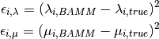
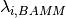
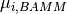
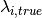
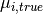
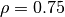
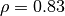

13. The Moore et al (2016) use of developer switch “random” was not scientifically justified¶
Moore et al (2016; MEA) obtained their results by activating a hidden developer switch,
combineExtinctionAtNodes = random. This parameter was undocumented and unavailable for general use; the only mention of this option in any BAMM-associated code and documentation occurs on these lines in BAMM’s C++ code. As we have shown on the previous page, MEA’s use of random dramatically increased the effects of the model prior on the posterior. On a separate page, we also demonstrate that the MEA likelihood function is invalid and leads to probabilities that can exceed 1 (e.g.,  ).
).
13.1. Summary¶
We encourage the community to explore BAMM’s assumptions, limitations, and performance in practice. However, we do not believe that use of the random parameter is justified, and certainly not without explicit comparison to the default. Use of this undocumented switch was not discussed in MEA.
- Analysis of branch-specific error in speciation and extinction rates indicates that the default
if_differentoption performs better at evolutionary rate estimation relative to therandomparameter used by MEA across the simulated phylogenies released with their article. The switch activated by MEA leads to increased error in speciation and extinction rates relative to the BAMM default values (e.g., with the developer switchrandom). - The undocumented and non-peer reviewed
randomparameter leads to unstable posterior distributions that differ every time a phylogeny is loaded into BAMM (e.g., two independent runs set torandom, with the same data, are not guaranteed to have the same true posterior distribution), as is explained here. - For each analysis, MEA created merged posterior distributions from independent BAMM runs performed with the
randomparameter. This action is mathematically invalid, because independent BAMM runs withrandomhave potentially unique stationary distributions, even when the underlying data are identical.
13.2. Analysis of variable rates phylogenies from MEA¶
We repeated all analyses of variable rates phylogenies analyzed in MEA as performed by the authors (using the hidden switch random activated), and we repeated these analyses after restoring this parameter to its default value. For each phylogeny in the MEA dataset, we computed the (true) speciation and extinction rate on each branch, and we computed the (true) speciation and extinction rates at each tip of the tree. We tabulated the BAMM-estimated rates for each branch and tip using random and default settings for combineExtinctionAtNodes. We provide R code that researchers can use to extract branch- and tip-specific evolutionary rates from the MEA input files, should you want to repeat these analyses.
MEA provided the true rates of speciation and extinction for each simulated phylogeny, and we computed the mean squared error per-branch and per-tip. For the i’th branch or tip, we simply computed the squared error as

where  and  are the estimated branch (or tip) rates obtained from BAMM (e.g., mean of the marginal posterior distribution), and  and  are the corresponding true values in the generating model. We performed this exercise for all branches and tips in their simulated phylogenies after analyzing each dataset with BAMM.
The following figure shows the mean and median squared error in speciation rate estimates for BAMM v2.5 (open circles/squares) and compares this error to that obtained after the hidden random parameter is activated (as in MEA). We will look at these values across a range of model priors (gamma =  =
= expectedNumberOfShifts):
{kind=link}
In each case, we find that the mean and median per-branch error is lower with the default if_different setting in BAMM. Here are the corresponding error estimates for extinction:
{kind=link}
Again, the BAMM defaults perform better (and certainly no worse, e.g., gamma = 0.1) than the random option used by MEA. Here are the corresponding mean squared error estimates when we look at speciation rates at the tips of the trees:
{kind=link}
And finally, the corresponding tip error for extinction rates:
{kind=link}
Here, we see a fairly substantial difference between the BAMM v2.5 defaults and the MEA random setting: it is clear that the MEA settings lead to estimates of extinction that are considerably worse than expected under standard usage of BAMM.
13.2.1. Summary: The use of random was not scientifically justified¶
As we see above, using MEA’s rate-variable datasets and input files, we find that BAMM performs better when the hidden random switch used by MEA is not activated (e.g., when the default if_different setting is used, rather than MEA’s random setting). We conclude that:
- Considering only parameter estimation, the settings used by MEA cause BAMM to perform worse than the default. This is important, as MEA used
randomto support the claim that BAMM speciation rates are uncorrelated with the true values. - The
randomoption is theoretically unsound in that it leads to dependence of likelihoods on arbitrary node rotations (e.g., swapping left- and right descendants of a node changes the posterior distribution), as pointed out by Hoehna on this GitHub post. - The
randomoption is mathematically incoherent as used by MEA, as the authors pooled across independent MCMC runs using this option. The stationary distributions of the MCMC simulation change every time a tree is loaded into memory when therandomoption is activated, and results thus cannot be pooled in this fashion. Note: this pooling may or may not matter in practice, but we do not see how it can be justified on theoretical grounds. - Finally, as documented on the previous page, the default (
if_different) value yields posteriors on the number of shifts that are less sensitive to the prior.
Given these observations, we must strongly recommend that BAMM users not change the combineExtinctionAtNodes setting.
13.3. Are BAMM rate estimates correlated with the true values?¶
The short answer is yes: we find that BAMM does a reasonable job at inferring rates of speciation for the variable rate phylogenies provided with MEA. However, BAMM in general has low power to infer rate heterogeneity for these phylogenies: the trees are small, and the average number of tips per shift regime is small. Here is the ranked frequency distribution of the number of tips in all non-root shift regimes across the MEA rate variable phylogenies.

The red lines indicate the 75, 90, and 95 percentiles of the frequency distribution of tips-per-rate shift. Hence, more than 75% of all rate shifts in the MEA phylogenies are represented by 2 or fewer taxa, and 90% of all rate shifts are represented by 13 or fewer taxa. This isn’t problematic: indeed, this type of frequency spectrum is exactly what we should expect under the Poisson process used to simulate the datasets. However, it does mean that it’s easy to confuse low power with poor performance in practice, and care must be taken to ensure that the large number of rate shifts leading to one or several tips do not unduly bias the analysis. We should expect BAMM - or any other method for analyzing rate shifts - to have very low power to infer rate shifts leading to small numbers of taxa. If BAMM has low power to infer rate shifts leading to (say) 20 or fewer tips, then we would expect the vast majority of shifts in the MEA dataset to be invisible to BAMM: these lineages would all have evolutionary rates equal to the rate inferred for the background (root) process.
13.3.1. BAMM estimates are correlated with true values on MEA trees¶
Here, we will present only a brief analysis, focusing on tip rates estimated using BAMM on the set of variable rates phylogenies from MEA, and considering only expectedNumberOfShifts = 1 (e.g.,  ). Across all 8,846 tips in the complete MEA set of 100 phylogenies, we find the following from our analyses:
). Across all 8,846 tips in the complete MEA set of 100 phylogenies, we find the following from our analyses:
- Spearman
 for true vs
for true vs if_differentspeciation = 0.66 - Spearman for true vs
randomspeciation = 0.67 - Spearman for true vs
if_differentextinction = 0.25 - Spearman for true vs
randomextinction = 0.19
All rates are correlated with the true values, even when we use the MEA random setting, which leads to greater overall error (as documented above). Indeed, these correlations are quite high considering the amount of noise present due to rate shifts leading to one or two taxa. Results below are broadly comparable with both random and if_different, so we will only discuss the correct if_different results. As we demonstrate below, correlations between true rates and BAMM estimates are even higher when we consider rate shifts with enough taxa to be reliably inferred with BAMM.
Here is a plot of pairwise true versus BAMM tip rate estimates (speciation) for the MEA variable rates trees:
{kind=link}
Each individual tip across all tips in the MEA dataset is represented by a single point. Red line represents a perfect one-to-one relationship between true and BAMM-estimated values. The blue line is a smoothed curve (loess) through the data. There is a strong positive relationship between true and BAMM-estimated rates, although it is somewhat masked by the extensive noise due to rate regimes with one or several tips (particularly for very low values of speciation rate). Now, we will re-plot these data after excluding all tips belonging to rate regimes with fewer than 25 taxa:

Now, we see that the relationship looks much tighter (which it is: ). However, we might expect that BAMM would do best at inferring rates for tips that are diversifying under the root process (e.g., the set of tips with the same rate as the root rate class): these rate regimes are usually the largest, and it’s possible that BAMM performs poorly at estimating rates on derived rate classes. Here’s another plot of true vs BAMM rates, excluding all shift regimes with < 25 tips and also excluding all root regimes. Hence, this only reflects our confidence in inferring speciation rates for derived rate classes:
{kind=link}
Interestingly, BAMM actually performs even better at estimating rates for this set of regimes (, across the 1588 tips belonging to derived shift classes with 25 or more tips).
Finally, we present two analyses demonstrating that BAMM speciation rates are correlated with the true values no matter how the data are sliced. Here, across all tips, is the correlation between the BAMM-estimated speciation rate and the true rate as a function of the minimum number of tips in a given rate class. A brief explanation: the MEA variable rates trees (n = 100) include a total of 8,846 tips. Each tip is assigned to a rate class. For example, a tree with 200 tips might have a single rate shift leading to 5 tips. Hence, this tree would have 2 rate classes: the root class, with 195 tips, and the derived rate class, with 5 tips.
This figure shows the Pearson (red) and Spearman (blue) correlations between true and BAMM-estimated speciation rates across all tips, as a function of the minimum number of tips in a given rate class. So, a value of X = 10 drops from the analysis all tips that belong to rate classes with 9 or fewer tips. A value of X = 1 includes all 8,846 tips.
{kind=link}
Overall, correlations are high between true and BAMM-estimated speciation rates. Finally, we’ll consider the same figure, but where we drop all root rate classes and thus consider only the derived shift classes. Once again, BAMM rates are tightly correlated with the true rates:
{kind=link}
In summary, our re-analysis of rate-variable datasets from MEA provides no evidence to support the claim that BAMM speciation rates are uncorrelated with the true rates. We also find that speciation rates estimated with if_different are broadly similar to those estimated with random, so the use of a hidden developer switch cannot explain a purported lack of correlation between true and generating values as reported in the MEA article.
The analyses presented above represent a preliminary assessment of speciation rate reliability with BAMM, and we encourage the community to repeat and validate the analyses we’ve presented here.